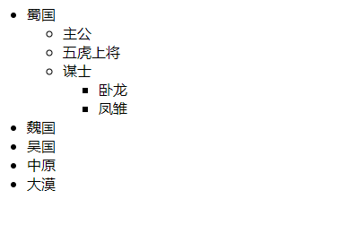

级联菜单
效果图

1 <style>
2 li{
3 cursor: pointer; //鼠标是小手
4 }
5 .jiu{
6 display:none;
7 }
8 </style>
9 <body>
10 <ul>
11 <li>蜀国
12 <ul class="jiu">
13 <li>主公
14 <ul class="jiu">
15 <li>刘备</li>
16 <li>刘禅</li>
17 </ul>
18 </li>
19 <li>五虎上将
20 <ul class="jiu">
21 <li>关羽</li>
22 <li>张飞</li>
23 <li>赵云</li>
24 <li>黄忠</li>
25 <li>马超</li>
26 </ul>
27 </li>
28 <li>谋士
29 <ul class="jiu">
30 <li>卧龙</li>
31 <li>凤雏</li>
32 </ul>
33 </li>
34 </ul>
35 </li>
36 <li>魏国
37 <ul class="jiu">
38 <li>主公
39 <ul class="jiu">
40 <li>曹操</li>
41 <li>曹丕</li>
42 </ul>
43 </li>
44 <li>武将
45 <ul class="jiu">
46 <li>典韦</li>
47 <li>夏侯惇</li>
48 <li>许褚</li>
49 </ul>
50 </li>
51 <li>文臣
52 <ul class="jiu">
53 <li>杨修</li>
54 <li>许攸</li>
55 <li>司马懿</li>
56 </ul>
57 </li>
58 </ul>
59 </li>
60 <li>吴国
61 <ul class="jiu">
62 <li>主公
63 <ul class="jiu">
64 <li>孙策</li>
65 <li>孙权</li>
66 </ul>
67 </li>
68 <li>武将
69 <ul class="jiu">
70 <li>周瑜</li>
71 <li>吕蒙</li>
72 </ul>
73 </li>
74 <li>文臣
75 <ul class="jiu">
76 <li>诸葛瑾</li>
77 <li>张昭</li>
78 <li>鲁肃</li>
79 </ul>
80 </li>
81 </ul>
82 </li>
83 <li>中原</li>
84 <li>大漠</li>
85 </ul>
86 </body>
87 </html>
88 <script>
89 // 1.给所有的li添加点击事件
90 // 2.判断li内部是否有子元素ul
91 // 3.如果有ul,隐藏就变显示,显示就变隐藏
92
93 // 原生
94 var list = document.getElementsByTagName("li");
95 for(var i = 0; i < list.length; i++){
96 list[i].onclick = function(e){
97 var e = e || event;
98 e.stopPropagation ? e.stopPropagation() : e.cancelBubble = true; //阻止冒泡
99 if(this.lastElementChild){ //有下级菜单
100 // 获取不到最后一个元素的话,返回null,null没有style属性会报错,所以要判断有没有最后一个元素
101 if(this.lastElementChild.style.display == "block"){
102 this.lastElementChild.style.display = "none";
103 }else{
104 this.lastElementChild.style.display = "block";
105 }
106
107 }
108 }
109 }
110 </script>js里判断是否有下级菜单的下一个判断（判断style的属性值），判断不一样儿（ == "block" / =="none"）会导致第一次点击不生效。第二次及以后的点击正常反应。